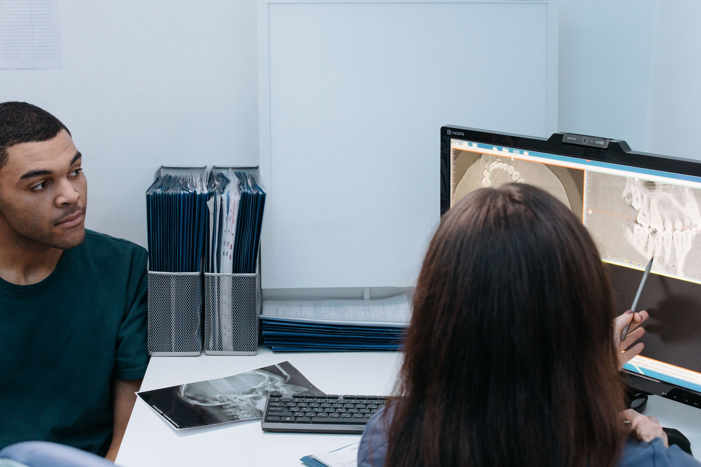

Стоматолог-терапевт
Мария Волкова
Лечение зубов · Эстетические реставрации
СТОМАТОЛОГИЯ С ВНИМАНИЕМ К ЧЕЛОВЕКУ
Здоровье · Эстетика · ЗаботаБережно лечим, внимательно слушаем и помогаем улыбаться свободно. В вашем темпе. С понятным планом.
Лечение по показаниям
Сохраняем то, что можно сохранитьПонятный план и стоимость
Обсуждаем всё до начала леченияВнимание к вашему комфорту
Объясняем каждый следующий шаг«Армадент» — место, где стоматология начинается с доверия. Мы смотрим на ситуацию целиком: от здоровья зубов и прикуса до того, как вы чувствуете себя в кресле.
Вы задаёте вопросы. Мы объясняем варианты, обсуждаем ваши ожидания и вместе выбираем решение. Без спешки и давления.
От профилактики до комплексного восстановления. Подберём лечение после знакомства и диагностики.
Сохраняем здоровье и естественную структуру
Лечение кариеса, восстановление зубов и работа с корневыми каналами. На консультации обсудим состояние зуба, необходимые обследования и возможные способы его сохранения.
Забота, которая помогает сохранить улыбку
Профессиональное удаление налёта и зубного камня, полировка и рекомендации для домашнего ухода. Подбираем частоту профилактических визитов индивидуально.
Естественные оттенки, формы и пропорции
Отбеливание, реставрации и виниры. Сначала оцениваем здоровье зубов, затем обсуждаем форму, цвет и границы возможных изменений. Красота начинается с подходящего именно вам решения.
Гармония, которая работает каждый день
Ортодонтическое лечение с помощью брекет-систем и элайнеров. После диагностики врач расскажет о доступных вариантах, ориентировочной длительности и этапах наблюдения.
Возвращаем комфорт и уверенность
Восстановление одного или нескольких отсутствующих зубов. План зависит от состояния костной ткани и общего здоровья. Объясняем хирургический и ортопедический этапы, альтернативы и сроки.
Точность в деталях, естественность в результате
Вкладки, коронки и протезы помогают восстановить форму и функцию зубов. Обсуждаем материалы, особенности ухода и то, как выбранная конструкция будет работать в вашем случае.

Всё начинается с внимания.ВАШ ПЕРВЫЙ ВИЗИТ
Можно прийти с вопросом, готовым планом лечения или просто желанием позаботиться о себе.
Врач выслушает ваши пожелания, уточнит историю лечения и ответит на вопросы. Если вы тревожитесь, скажите об этом — вместе найдём комфортный темп.
Врач, которому можно задать любой вопрос. Команда, которая помнит: перед ней человек, а не только задача.
Лечение зубов · Эстетические реставрации
Имплантация · Восстановление зубов
Хорошее лечение —ПРИНЦИП НАШЕЙ КОМАНДЫ
это когда вам
всё понятно.
И вы чувствуете,
что вас слышат.
В макете представлены примеры карточек: имена и фотографии специалистов демонстрационные.
После диагностики вы получаете план с этапами и стоимостью. Обсуждаем варианты до начала лечения.
Указанные цены — примеры для макета. Итоговая стоимость зависит от объёма лечения и определяется после осмотра.
Выберите услугу, чтобы обсудить её на консультации.
ОПЫТ ПАЦИЕНТА
Так может выглядеть блок отзывов о том, что действительно важно: внимании, ясности и спокойствии.
Впервые ушла с консультации без ощущения, что нужно срочно принимать решение. Мне объяснили варианты и дали время подумать.
Даже если вопрос кажется простым. Мы здесь, чтобы вам было понятно.
С консультации и осмотра. Расскажите, что вас беспокоит, даже если сейчас нет боли. Врач оценит ситуацию, предложит необходимые обследования и объяснит дальнейшие действия.
Скажите об этом при записи и врачу. Можно заранее договориться о паузах и комфортном темпе, обсудить обезболивание и каждый этап. Первая встреча может быть только знакомством.
Да. Возьмите имеющиеся снимки, план лечения и медицинские документы. Врач изучит материалы, проведёт осмотр и расскажет о возможных вариантах. Иногда потребуется дополнительная диагностика.
После осмотра и необходимой диагностики. В плане будут указаны этапы и стоимость. Если в процессе потребуется изменить план, врач обсудит это с вами до дополнительных процедур.
Возьмите документ, удостоверяющий личность, список принимаемых лекарств и имеющиеся снимки. Для обычной консультации специальная подготовка чаще всего не нужна. Уточнить детали можно при записи.
НАЧНЁМ С ЗНАКОМСТВА
Оставьте ваш номер. На настоящем сайте администратор поможет выбрать врача и удобное время.
Подробности о расположении клиники, расписании и контактах появятся здесь после согласования.
Стоматология с вниманием к человеку
Адрес и телефон уточняются
Место для маршрута, парковки и ближайшей станции метро.